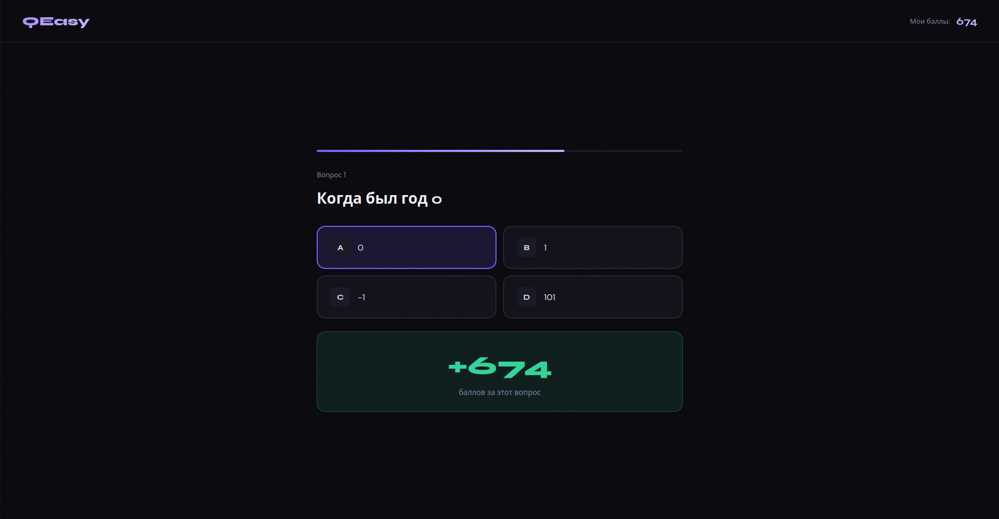
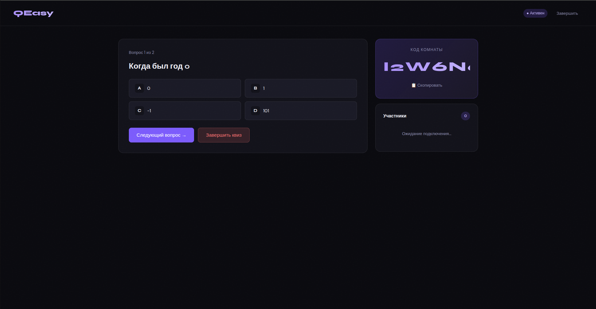
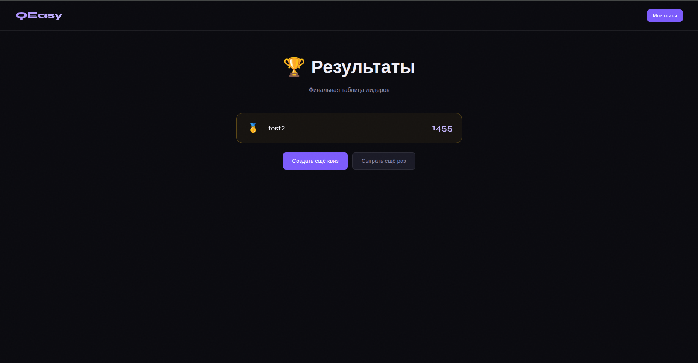
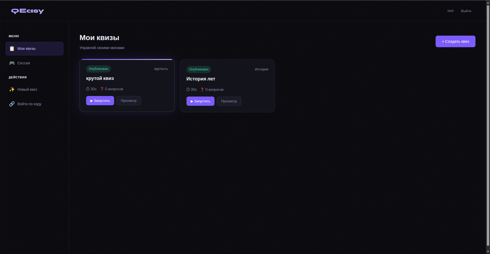
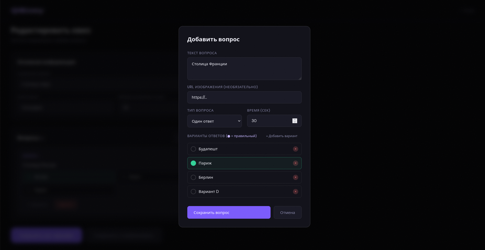
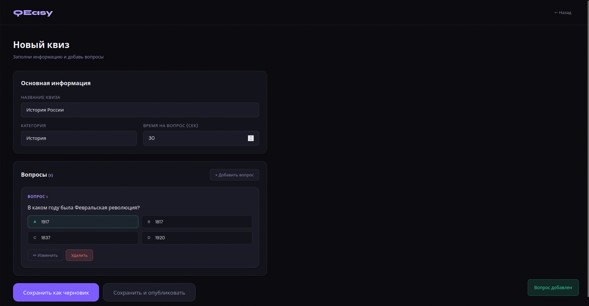
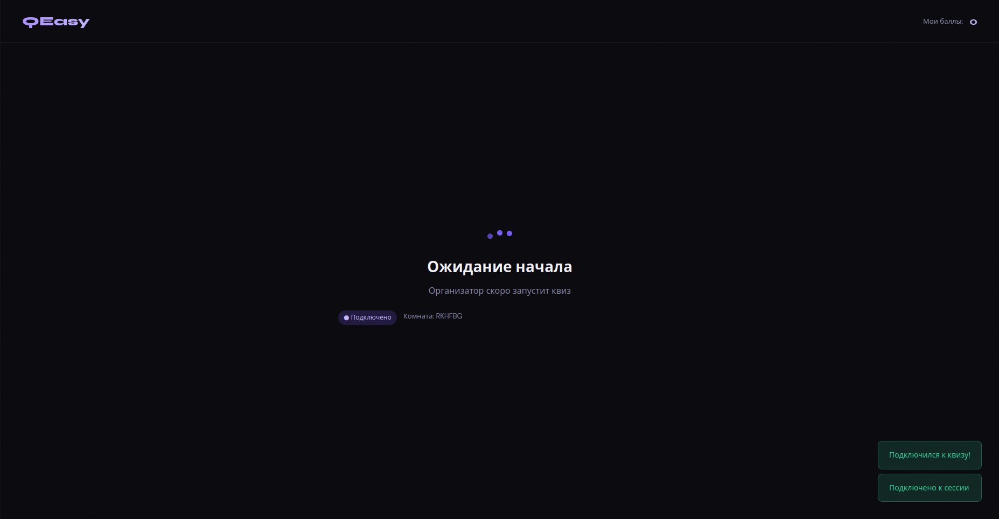
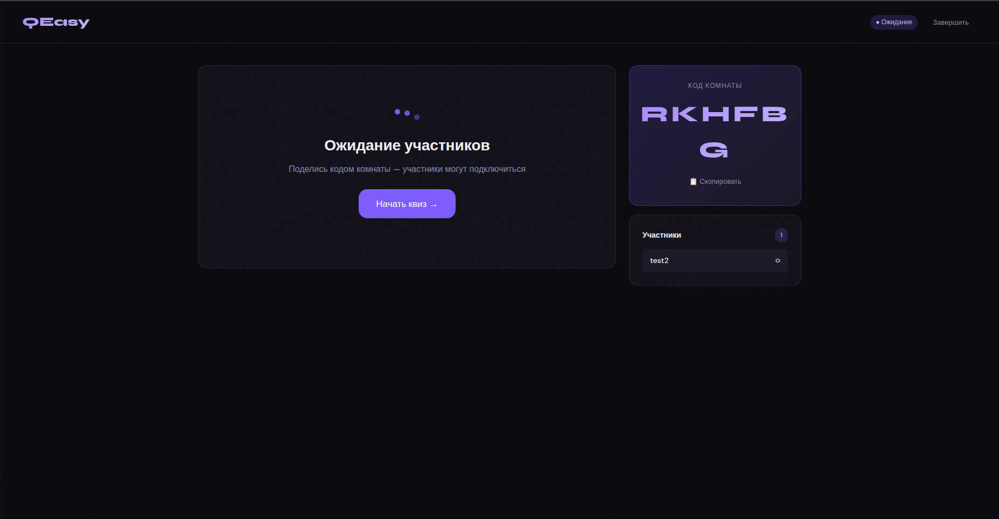
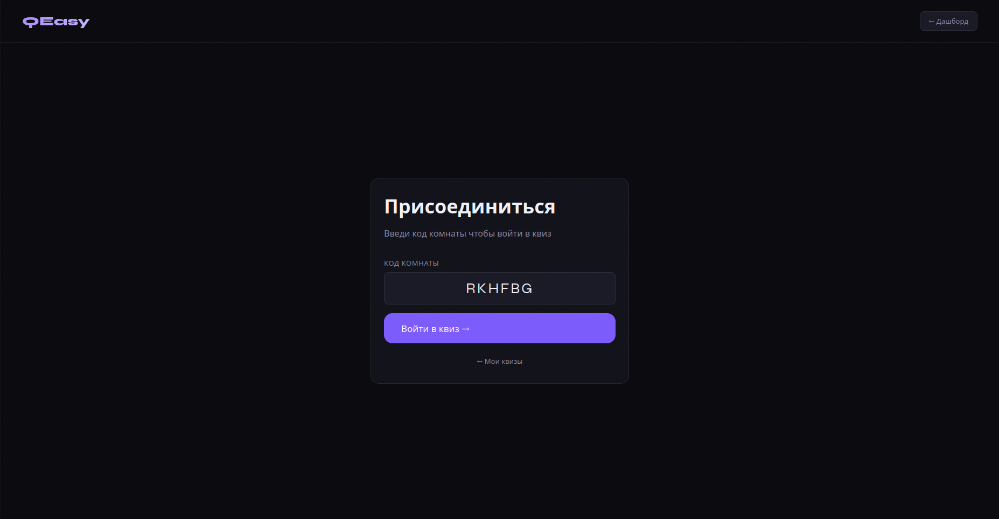

QEasy App (задание от VK Education)
В чём заключалась задача?
Необходимо было разработать веб-приложение для проведения квизов, которое включает в себя следующие функции:
- Регистрация и авторизация пользователей — участников и организаторов
- Создание и настройка квизов: выбор категорий вопросов, настройка времени и правил проведения
- Возможность добавления организатором вопросов разных типов: текстовых и в виде изображения, с одиночным и множественным выбором ответа
- Функция запуска опроса с возможностью подключения участников к текущему квизу по коду комнаты. Каждое задание квиза отображается в режиме реального времени для всех участников и доступно для ответа только во время его демонстрации
- Система подсчёта баллов и определения победителей
- Личный кабинет для участников и организаторов с историей участия и проведённых квизов

Что было сделано?
Backend приложения был полностью реализован на Go с использованием архитектурного подхода Clean Architecture. Проект разделён на слои transport / service / repository, что позволило изолировать бизнес-логику от работы с HTTP, WebSocket и базой данных.

Для HTTP API использовался фреймворк Gin.
Реализованы REST endpoints для регистрации и авторизации пользователей, управления квизами, комнатами, вопросами и статистикой.
Для авторизации была реализована JWT-аутентификация с middleware-проверкой токенов и разграничением ролей участников и организаторов.

Для хранения данных использовался PostgreSQL. Были реализованы таблицы пользователей, квизов, вопросов, игровых комнат, результатов и истории участия. Работа с базой данных организована через repository-слой с разделением SQL-логики от основной бизнес-логики приложения.


Также была реализована система подсчёта результатов, хранения истории игр и формирования статистики участников после завершения квиза.

Взаимодействие участников во время игры реализовано через WebSocket. Сервер поддерживает комнаты квизов, подключение игроков по коду, синхронную отправку вопросов всем участникам и получение ответов в режиме реального времени.

В проекте использовались библиотеки crypto/aes, crypto/cipher,
crypto/rand, encoding/hex для работы с шифрованием и безопасной обработкой данных.
Для конкурентного доступа и многопоточной логики активно использовался пакет sync.

Отдельное внимание уделялось обработке ошибок, валидации входных данных и стабильности WebSocket-соединений при одновременном подключении большого количества участников.

Сложности
Основной сложностью стала реализация WebSocket-взаимодействия между сервером и несколькими участниками одновременно. Требовалось корректно синхронизировать состояние комнаты, отправку вопросов и получение ответов в реальном времени без конфликтов между goroutine.
Также сложности возникали при проектировании структуры проекта и разделении ответственности между слоями приложения. В процессе разработки несколько раз перерабатывалась архитектура repository/service слоёв для уменьшения связанности компонентов.
Ссылки
Репозиторий с кодом geolav/QEasyApp